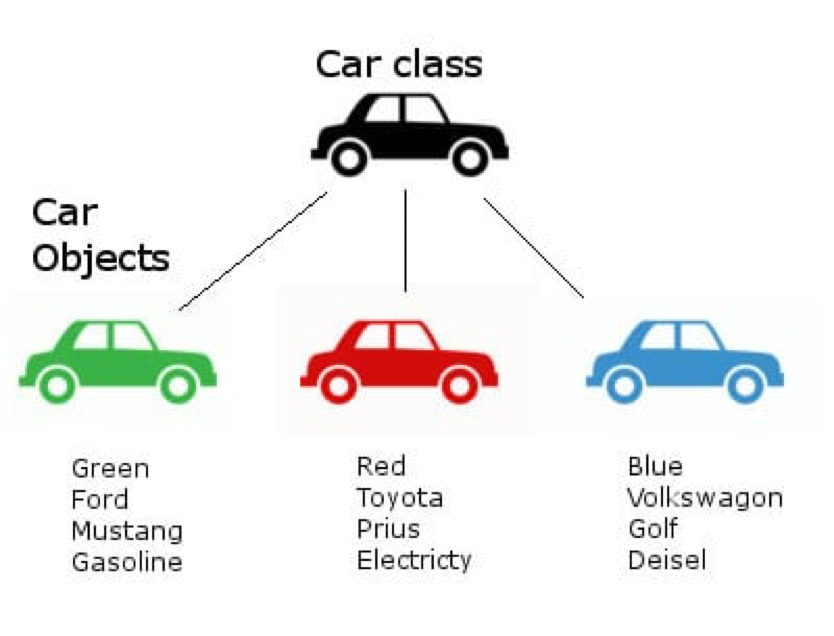

<!DOCTYPE HTML>
<html lang="" >
    <head>
        <meta charset="UTF-8">
        <meta content="text/html; charset=utf-8" http-equiv="Content-Type">
        <title>csa Chapter1 · CoderFAN 资料库</title>
        <meta http-equiv="X-UA-Compatible" content="IE=edge" />
        <meta name="description" content="">
        <meta name="generator" content="GitBook 6.0.3">
        <meta name="author" content="Todd Lyu">
        
        
    
    <link rel="stylesheet" href="gitbook/style.css">

    
            
                
                <link rel="stylesheet" href="gitbook/gitbook-plugin-highlight/website.css">
                
            
                
                <link rel="stylesheet" href="gitbook/gitbook-plugin-expandable-chapters-small/expandable-chapters-small.css">
                
            
                
                <link rel="stylesheet" href="gitbook/gitbook-plugin-back-to-top-button/plugin.css">
                
            
                
                <link rel="stylesheet" href="gitbook/gitbook-plugin-code/plugin.css">
                
            
                
                <link rel="stylesheet" href="gitbook/gitbook-plugin-highlight/website.css">
                
            
        

    

    
        
    
        
    
        
    
        
    
        
    
        
    

        
    
    
    <meta name="HandheldFriendly" content="true"/>
    <meta name="viewport" content="width=device-width, initial-scale=1, user-scalable=no">
    <meta name="apple-mobile-web-app-capable" content="yes">
    <meta name="apple-mobile-web-app-status-bar-style" content="black">
    <link rel="apple-touch-icon-precomposed" sizes="152x152" href="gitbook/images/apple-touch-icon-precomposed-152.png">
    <link rel="shortcut icon" href="gitbook/images/favicon.ico" type="image/x-icon">

    
    <link rel="next" href="ch02.html" />
    
    
    <link rel="prev" href="./" />
    
    <!-- MathJax 配置：唯一且完整 -->
<script>
    window.MathJax = {
      tex: {
        inlineMath:  [['$', '$'], ['\\(', '\\)']],
        displayMath: [['$$','$$'], ['\\[','\\]']],
        processEscapes: true,
        processEnvironments: true,
        strict: "ignore",
        macros: { "\\E":"\\mathbb{E}", "\\Var":"\\operatorname{Var}" }
      },
    };
    </script>
    
    <!-- 核心脚本（defer不阻塞渲染） -->
    <script defer src="https://cdn.jsdelivr.net/npm/mathjax@3/es5/tex-chtml.js"></script>
    
    <!-- 放在 tex-chtml.js 之后 -->
    <script>
    (function () {
      function typeset() {
        if (window.MathJax && MathJax.typesetPromise) {
          MathJax.typesetPromise().catch(console.error);
        }
      }
    
      /* 第一次正文插入 */
      document.addEventListener('DOMContentLoaded', typeset);
    
      /*   关键：等待 gitbook.js 初始化成功   */
      function hookGitBook() {
        if (window.gitbook && gitbook.events) {
          gitbook.events.bind('page.change', typeset);   // 切章排版
        } else {
          /* gitbook.js 还没加载完 → 100 ms 后再试 */
          setTimeout(hookGitBook, 100);
        }
      }
      hookGitBook();   // 启动递归等待
    })();
    </script>
    
    

    </head>
    <body>
        
<div class="book honkit-cloak">
    <div class="book-summary">
        
            
            
                <nav role="navigation">
                <a href=".." class="btn"><b></b>&#128512;返回上层&#128512;</b></a>
                


<ul class="summary">
    
    

    

    
        
        
    
        <li class="chapter " data-level="1.1" data-path="./">
            
                <a href="./">
            
                    
                    Introduction
            
                </a>
            

            
        </li>
    
        <li class="chapter active" data-level="1.2" data-path="ch01.html">
            
                <a href="ch01.html">
            
                    
                    csa Chapter1
            
                </a>
            

            
        </li>
    
        <li class="chapter " data-level="1.3" data-path="ch02.html">
            
                <a href="ch02.html">
            
                    
                    csa Chapter2
            
                </a>
            

            
        </li>
    
        <li class="chapter " data-level="1.4" data-path="ch03.html">
            
                <a href="ch03.html">
            
                    
                    csa Chapter3
            
                </a>
            

            
        </li>
    
        <li class="chapter " data-level="1.5" data-path="ch04.html">
            
                <a href="ch04.html">
            
                    
                    csa Chapter4
            
                </a>
            

            
        </li>
    
        <li class="chapter " data-level="1.6" data-path="ch05.html">
            
                <a href="ch05.html">
            
                    
                    csa Chapter5
            
                </a>
            

            
        </li>
    
        <li class="chapter " data-level="1.7" data-path="ch06.html">
            
                <a href="ch06.html">
            
                    
                    csa Chapter6
            
                </a>
            

            
        </li>
    
        <li class="chapter " data-level="1.8" data-path="ch07.html">
            
                <a href="ch07.html">
            
                    
                    csa Chapter7
            
                </a>
            

            
        </li>
    
        <li class="chapter " data-level="1.9" data-path="ch08.html">
            
                <a href="ch08.html">
            
                    
                    csa Chapter8
            
                </a>
            

            
        </li>
    
        <li class="chapter " data-level="1.10" data-path="ch09.html">
            
                <a href="ch09.html">
            
                    
                    csa Chapter9
            
                </a>
            

            
        </li>
    

    

    <li class="divider"></li>

    <li>
        <a href="https://www.gitbook.com" target="blank" class="gitbook-link">
            Published with GitBook
        </a>
    </li>
</ul>


                </nav>
            
        
    </div>

    <div class="book-body">
        
            <div class="body-inner">
                
                    

<div class="book-header" role="navigation">
    

    <!-- Title -->
    <h1>
        <i class="fa fa-circle-o-notch fa-spin"></i>
        <a href="." >csa Chapter1</a>
    </h1>
</div>


                    <div class="page-wrapper" tabindex="-1" role="main">
                        <div class="page-inner">
                            
                                <section class="normal markdown-section">
                                
                                <h2 id="什么是类">什么是类</h2>
<p>在现实生活中，我们能见到非常多的“归类”例子，例如，喜鹊、麻雀、乌鸦、燕子等等都属于鸟类，而狮子、老虎、家猫等等都属于猫科动物。在这样的例子中，“鸟类”、“猫科动物”都定义了一个类(class)。</p>
<p>类(class）是定义同一类所有对象的变量和方法的蓝图或原型，描述了所创建的对象共同的属性（状态）和方法（行为）。换言之，类是一个模板，它描述一类对象的行为和状态。</p>
<p>而各种具体的动物（比如某一只猫），则是属于各自类别的一个个实例（instance），也叫对象（object），在后面几节我们会细讲。</p>
<p></img></p>
<p>由此图可见，从左至右的三辆车各有独自的属性（状态）：颜色、厂家、品牌、动力类型，等等。但他们都作为对象（object）共同属于“车（Car）”这个类。</p>
<p>类的定义方法很简单，如下：</p>
<pre><code class="lang-java"><span class="hljs-keyword">public</span> <span class="hljs-class"><span class="hljs-keyword">class</span> 类名 </span>{
<span class="hljs-comment">//类的内容</span>
}
</code></pre>
<p>之后在介绍继承的时候我们还会介绍extends关键字，这里我们先记下最简单的用法。</p>
<p>我们这个教程里面的类，无特殊说明，指的都是公有类（public class），对于私有类我们不需要掌握。</p>
<h2 id="属性和方法">属性和方法</h2>
<h3 id="属性">属性</h3>
<p>属性（property）是一种变量，只不过这种变量不定义在函数内部，而是定义在整个类里，整个类内都可以访问。定义方式和之前在函数内定义变量的方式差别不大，只不过属性多了一个可选的关键字，等看到本章的“作用域和三个关键字”你就明白了。这个Car类的属性如<code>fuel</code>，<code>maxspeed</code>等等就属于属性。</p>
<h3 id="方法">方法</h3>
<p>方法（method）其实就是函数（function），它可以指导一个类中的对象如何执行具体的行为动作，不过一般如果我们想强调这个函数在一个类里面的作用，我们就会用“方法”这个词，比如<code>refuel()</code>就是用来操作这些属性的方法。我们还可以用过参数来告诉这个函数具体的内容，比如<code>setSpeed(double newSpeed)</code>这个函数就可以让我们给一个浮点参数<code>newSpeed</code>，让我们告诉它要设定的车的具体速度，这里的<code>newSpeed</code>写在函数定义里，称为形式参数（parameter），形式参数<strong>一定</strong>是要是一个合法的变量名，参数与参数用<strong>逗号</strong>隔开，每一个参数前面<strong>都需要有一个参数类型</strong>。</p>
<p>Java的方法以如下格式呈现：</p>
<pre><code class="lang-java"><span class="hljs-keyword">public</span>/<span class="hljs-keyword">private</span> + 可能有 <span class="hljs-keyword">static</span> 关键字 + 返回值类型 + 方法名(形式参数列表){
  方法体
}
</code></pre>
<p><code>public</code>、<code>private</code>和<code>static</code>这三个关键字在“三个关键字”一节中会详细说明。</p>
<p>对于没有参数的函数，参数列表留空即可。</p>
<p>返回值可以理解为这个操作的结果，例如<code>getSpeed()</code>返回了一个<code>double</code>，代表当前的速度，那么用如下的方法就可以把当前的速度赋值给变量<code>carSpeed</code>：</p>
<pre><code class="lang-java">carSpeed = getSpeed();
</code></pre>
<p>在一个函数里面，我们通过<code>return</code>来终止整个函数的运行并给出返回值。
例如<code>getSpeed()</code>可以这么定义（假定函数内有一个<code>double</code>类型的<code>speed</code>）：</p>
<pre><code class="lang-java"><span class="hljs-function"><span class="hljs-keyword">public</span> <span class="hljs-keyword">double</span> <span class="hljs-title">getSpeed</span><span class="hljs-params">()</span></span>{
  <span class="hljs-keyword">return</span> speed;
}
</code></pre>
<p>我们还可以定义一个<code>setSpeed(double newSpeed)</code>：</p>
<pre><code class="lang-java"><span class="hljs-function"><span class="hljs-keyword">public</span> <span class="hljs-keyword">void</span> <span class="hljs-title">setSpeed</span><span class="hljs-params">(<span class="hljs-keyword">double</span> newSpeed)</span></span>{
  speed = newSpeed;
}
</code></pre>
<p>你可能会发现，上面出现了一个<code>void</code>，这是因为我们的<code>setSpeed</code>不需要任何返回值，因此我们通过这个关键字直接告诉Java这个函数无返回值。</p>
<h3 id="类内访问方法和属性">类内访问方法和属性</h3>
<p>如果是在类的内部调用本类的函数，那么直接用如下格式调用即可：</p>
<pre><code class="lang-java">函数名(实际参数列表);
</code></pre>
<p>比如如果<code>car</code>类中的<code>speedUp</code>方法要调用<code>setSpeed</code>方法加速，就可以直接调用：</p>
<pre><code class="lang-java">setSpeed(getSpeed() + <span class="hljs-number">10</span>); <span class="hljs-comment">// 把当前的速度加上10作为参数给setSpeed</span>
</code></pre>
<p>上面的<code>getSpeed() + 10</code>作为一个整体，就是实际参数（argument）了，实际参数不需要是一个变量名，它可以是任意的表达式（比如<code>1+10</code>，<code>getSpeed() + 10</code>），调用函数的时候会先算出这个表达式的值，把这个值给形式参数（比如给了<code>setSpeed</code>的<code>newSpeed</code>参数），再运行函数的内容。</p>
<p>比如下面这个精简版的car类就定义了一个属性fuel和一个方法addFuel（在main里没有做操作，因此什么也不会输出）：</p>
<pre><code class="lang-java">&lt;lab lang="java" parameters="filename=car.java"&gt;
public class car {
   double speed = 50; // 定义了一个属性
   public void setSpeed(double newSpeed) { // 定义了一个方法
     speed = newSpeed; // 操作这个属性
   }
   public static void main(String[] args) { // main是整个Java程序的入口
   }
}
&lt;/lab&gt;
</code></pre>
<p>你可能已经发现了，在这里文件名是<code>car.java</code>，这是因为Java要求我们让类的名称和类所处的文件名的名称保持一致。</p>
<h2 id="对象和对象类型">对象和对象类型</h2>
<p>一个对象（object），或一个类的实例（instance），指的是类的实体，比如一辆特定的奔驰就是<code>Car</code>这个类的实体。除了后面例外的<code>static</code>关键字声明的属性，每一个对象都有自己的一套属性（比如一辆奔驰和另一辆奔驰的<code>fuel</code>燃料就可以不一样多）。 
</img></p>
<p>要从一个类里面新建对象，我们可以使用<code>new</code>这个操作符。<code>new</code>最简单的用法如下：</p>
<pre><code class="lang-java">类名 变量名 = <span class="hljs-keyword">new</span> 类名();
</code></pre>
<p>比如定义一个<code>myCar</code>：</p>
<pre><code class="lang-java">car myCar = <span class="hljs-keyword">new</span> car();
</code></pre>
<p>这句代码先定义了<code>car</code>类型的变量<code>myCar</code>，通过类新建了一个实例，并且把这个实例赋值给了一个变量。</p>
<p>如果要调用一个类里面的方法，或是要访问或修改一个类里面的属性，我们可以使用<code>.</code>操作符，例如我们可以用<code>myCar.fuel</code>来访问<code>myCar</code>对象的<code>fuel</code>，也可以用<code>myCar.addFuel(90)</code>来调用<code>myCar</code>对象的<code>addFuel</code>方法。</p>
<pre><code class="lang-java">&lt;lab lang="java" parameters="filename=car.java"&gt;
public class car {
   double fuel = 10; // 定义了一个属性
   public void addFuel(double fuelValue) { // 定义了一个方法
     fuel += fuelValue; // 操作这个属性
   }
   public static void main(String[] args) { // main是整个Java程序的入口
     car myCar = new car(); // 生成了一个car实例
     myCar.addFuel(90); // 调用这个方法
     System.out.println("The car's fuel value is: " + myCar.fuel + "."); // 输出我们的fuel属性的值
   }
}
&lt;/lab&gt;
</code></pre>
<h2 id="作用域和三个关键字">作用域和三个关键字</h2>
<h3 id="作用域">作用域</h3>
<p>前面说过，作用域其实就是访问范围。在函数内定义的变量，作用域是在变量定义后到函数结束。在更内部（比如<code>for</code>循环的初始化内）定义的变量，作用域就仅限于那一个部分，到大括号结束为止。</p>
<p>那么接下来我们来看一下下面这三个关键字分别有什么效果，对作用域有什么影响吧。</p>
<h3 id="public关键字"><code>public</code>关键字</h3>
<p><code>public</code>关键字说明的是这个变量或者方法在类外是可见的，不仅可以在类本身里面调用，而且可以在类外通过<code>.</code>运算符调用。</p>
<p><strong>注意，如果没有明确使用<code>public</code>关键字来修饰一个类或一个方法，该类或方法默认即为<code>public</code>属性。例如：</strong></p>
<pre><code class="lang-java"><span class="hljs-keyword">public</span> <span class="hljs-class"><span class="hljs-keyword">class</span> <span class="hljs-title">Dog</span></span>{
<span class="hljs-comment">//类的内容</span>
}
</code></pre>
<p>与</p>
<pre><code class="lang-java"><span class="hljs-class"><span class="hljs-keyword">class</span> <span class="hljs-title">Dog</span></span>{
<span class="hljs-comment">//类的内容</span>
}
</code></pre>
<p>都是<code>public</code>的类。</p>
<p>同样， </p>
<pre><code class="lang-java"><span class="hljs-function"><span class="hljs-keyword">public</span> <span class="hljs-keyword">void</span> <span class="hljs-title">bark</span><span class="hljs-params">()</span></span>;
</code></pre>
<p>与</p>
<pre><code class="lang-java"><span class="hljs-function"><span class="hljs-keyword">void</span> <span class="hljs-title">bark</span><span class="hljs-params">()</span></span>;
</code></pre>
<p>也都是<code>public</code>的方法。</p>
<h3 id="private关键字"><code>private</code>关键字</h3>
<p>使用private修饰符所修饰的方法、属性仅能在本类中使用。如果在其他类中访问<code>private</code>变量会在编译时报错误，出现<code>Compile Error</code>。</p>
<p>为了避免外界程序能够随意访问、调用、修改我们的属性值，我们需要将我们的这些程序给“包裹”住，让外界不能够那么轻易地修改。如果我们在编写一个银行账户<code>BankBalance</code>的类时，不用<code>private</code>去修饰我们的存款余额等敏感信息的话，任何人都有权限去修改我们银行账户的钱，这是极其不安全的。因此，我们要用<code>private</code>修饰符，来把这些信息（属性）给隐藏住。这就是Java中“封装”的理念。</p>
<h3 id="static关键字"><code>static</code>关键字</h3>
<p>带有<code>static</code>关键字定义的方法被称为静态方法（static method）实际上也被称为类方法（class method）。相反，不带有<code>static</code>方法的就被称为实例方法了。静态方法并不随着我们的对象的创建才能使用，静态方法是与对象无关的。静态方法能够直接通过类的调用来使用。换句话说，实例方法是面向实例，也就是对象的（对象就是类的实例），而静态方法是面向类的。</p>
<p><code>MyClass.java</code>里有：</p>
<pre><code class="lang-Java"><span class="hljs-keyword">public</span> <span class="hljs-keyword">static</span> <span class="hljs-class"><span class="hljs-keyword">class</span> <span class="hljs-title">MyClass</span> </span>{
    <span class="hljs-function"><span class="hljs-keyword">public</span> <span class="hljs-keyword">static</span> <span class="hljs-keyword">void</span> <span class="hljs-title">sayHi</span><span class="hljs-params">()</span></span>{
        System.out.println(<span class="hljs-string">"Hi!"</span>);
    }
}
</code></pre>
<p><code>Hello.java</code>里有：</p>
<pre><code class="lang-Java"><span class="hljs-keyword">public</span> <span class="hljs-class"><span class="hljs-keyword">class</span> <span class="hljs-title">Hello</span> </span>{
    <span class="hljs-function"><span class="hljs-keyword">public</span> <span class="hljs-keyword">static</span> <span class="hljs-keyword">void</span> <span class="hljs-title">main</span><span class="hljs-params">(String[] args)</span> </span>{
        MyClass.sayHi();
    }
}
</code></pre>
<p>最后程序会输出“Hi!”的结果，而我们却没有用<code>new</code>创建实例。这是因为<code>static</code>关键字让sayHi这个方法不需要实例运行。这下你知道为什么<code>main</code>的前面有个<code>static</code>了吧，这是因为我们程序运行的时候Java可没有帮我们用<code>new</code>新建一个<code>Hello</code>实例呀。</p>
<p><code>static</code>关键字除了可以修饰方法以外，还可以修饰变量，称为静态变量，静态变量同样和实例无关，尽管在实例里面也可以访问这个变量，但要注意一点——静态变量是所有实例共有的，一个类<strong>只有一个</strong>。也就是说比如我们在一个奔驰的实例里面修改了一个Car的静态变量，那么其他所有的Car的实例里面的都这个静态变量会被修改。</p>
<p>最后要注意的一点是，静态方法不能调用实例变量（毕竟在静态方法的视野中可是没有实例变量的）。</p>
<p>我们之前学的<code>Math</code>类里面的方法其实就是实例方法（如<code>Math.random</code>，不需要新建一个<code>Math</code>类的实例），<code>Math</code>里面的常数也都是实例变量（如<code>Math.PI</code>）。</p>
<h2 id="this关键字"><code>this</code>关键字</h2>
<h3 id="引用成员变量">引用成员变量</h3>
<p>在Java中，一个实例方法或实例变量【也就是不是静态方法/变量（类方法/变量）的方法/变量】总是被一个特定的对象所调用的。而这一个『特定的对象』，就是其所调用的实例方法的一个『隐传入参数』(implicit parameter)，相当于传入了『是哪个对象调用了这个方法？』这样一个信息。在Java中，这一个特定的对象，可以用关键字<code>this</code>来方便地引用。</p>
<pre><code class="lang-java"><span class="hljs-keyword">public</span> <span class="hljs-class"><span class="hljs-keyword">class</span> <span class="hljs-title">dog</span> </span>{
   String name;
   <span class="hljs-function"><span class="hljs-keyword">void</span> <span class="hljs-title">bark</span><span class="hljs-params">()</span></span>{
     System.out.println(<span class="hljs-string">"I'm barking!"</span>);
    }
    <span class="hljs-function"><span class="hljs-keyword">public</span> <span class="hljs-keyword">static</span> <span class="hljs-keyword">void</span> <span class="hljs-title">main</span><span class="hljs-params">(String[] args)</span></span>{
      dog dog1 = <span class="hljs-keyword">new</span> dog();
      dog1.name = <span class="hljs-string">"bobo"</span>;
      dog1.bark();
      }
}
</code></pre>
<p>例如，在这个例子中，dog1是类中的一个对象，而name、bark（）则分别为实例变量、实例方法。在这里，bark()的传入参数为空，也就是说bark()方法没有"显式传入参数，但其『隐式传入参数』就是其引用者：dog1。</p>
<pre><code class="lang-java"><span class="hljs-keyword">public</span> <span class="hljs-class"><span class="hljs-keyword">class</span> <span class="hljs-title">Student</span> </span>{ 
  String name; <span class="hljs-comment">//定义一个成员变量name </span>
  <span class="hljs-function"><span class="hljs-keyword">private</span> <span class="hljs-keyword">void</span> <span class="hljs-title">SetName</span><span class="hljs-params">(String name)</span><span class="hljs-comment">//定义一个参数(局部变量)name</span>
   </span>{
    <span class="hljs-keyword">this</span>.name=name; <span class="hljs-comment">//将局部变量的值传递给成员变量</span>
   }
}
</code></pre>
<p><code>this</code>这个关键字代表的就是对象中的成员变量或者方法。也就是说，如果在某个变量前面加上一个<code>this</code>关键字，其指的就是这个对象的成员变量或者方法，而不是指成员方法的形式参数或者局部变量。</p>
<h3 id="调用类的构造方法">调用类的构造方法</h3>
<pre><code class="lang-java"><span class="hljs-keyword">public</span> <span class="hljs-class"><span class="hljs-keyword">class</span> <span class="hljs-title">Student</span> </span>{ <span class="hljs-comment">//定义一个类，类的名字为student</span>
    <span class="hljs-function"><span class="hljs-keyword">public</span> <span class="hljs-title">Student</span><span class="hljs-params">()</span> </span>{ <span class="hljs-comment">//定义一个方法，名字与类相同故为构造方法</span>
      <span class="hljs-keyword">this</span>(<span class="hljs-string">"Hello!"</span>);
    }
   <span class="hljs-function"><span class="hljs-keyword">public</span> <span class="hljs-title">Student</span><span class="hljs-params">(String name)</span> </span>{ <span class="hljs-comment">//定义一个带形式参数的构造方法</span>
   }
}
</code></pre>
<p>Student方法有两个构造方法，一个没有参数，一个有参数。在第一个没有带参数的构造方法中，使用了this(“Hello!”)这句代码，这句代码表示使用this关键字调用类中的有一个参数的构造方法。</p>
<h3 id="返回对象的值">返回对象的值</h3>
<p>this关键字除了可以引用变量或者构造方法之外，还有一个重大的作用就是返回类的引用。如在代码中，可以使用return this，来返回某个类的引用。此时这个this关键字就代表类的名称。
如代码在上面student类中使用return this，那么代码代表的含义就是return student。
可见，这个this关键字除了可以引用变量或者成员方法之外，还可以作为类的返回值，这才是this关键字最引人注意的地方。</p>
<h2 id="小练习">小练习</h2>
<p>1.Which of the following represents correct implementation code for the constructor with parameters?</p>
<p>(A) </p>
<pre><code class="lang-java">hrs = <span class="hljs-number">0</span>;
mins = <span class="hljs-number">0</span>;
secs = <span class="hljs-number">0</span>;
</code></pre>
<p>(B) </p>
<pre><code class="lang-java">hrs = h;
mins = m;
secs = s;
</code></pre>
<p>(C)</p>
<pre><code class="lang-java">resetTime(hrs, mins, secs);
</code></pre>
<p>(D)</p>
<pre><code class="lang-java">h = hrs;
m = mins;
s = secs;
</code></pre>
<p>(E)</p>
<pre><code class="lang-java">Time = <span class="hljs-keyword">new</span> Time(h, m, s);
</code></pre>
<cr type="hidden">E</cr>

<p>2.【2015年AP CS第24题】Consider the following class.</p>
<pre><code class="lang-java"><span class="hljs-keyword">public</span> <span class="hljs-class"><span class="hljs-keyword">class</span> <span class="hljs-title">SomeMethods</span>
</span>{
  <span class="hljs-function"><span class="hljs-keyword">public</span> <span class="hljs-keyword">void</span> <span class="hljs-title">one</span><span class="hljs-params">(<span class="hljs-keyword">int</span> first)</span>
  </span>{ / * implementation not shown * / }

  <span class="hljs-function"><span class="hljs-keyword">public</span> <span class="hljs-keyword">void</span> <span class="hljs-title">one</span><span class="hljs-params">(<span class="hljs-keyword">int</span> first, <span class="hljs-keyword">int</span> second)</span>
  </span>{ / * implementation not shown * / }

  <span class="hljs-function"><span class="hljs-keyword">public</span> <span class="hljs-keyword">void</span> <span class="hljs-title">one</span><span class="hljs-params">(<span class="hljs-keyword">int</span> first, String second)</span>
  </span>{ / * implementation not shown * / }
}
</code></pre>
<p>Which of the following methods can be added to the SomeMethods class without causing a compile-time error?</p>
<p>I. public void one (int value)</p>
<p>{ / <em> implementation not shown </em> / }</p>
<p>II.public void one (String first, int second)</p>
<p>{ / <em> implementation not shown </em> / }</p>
<p>III. public void one (int first, int second, int third)</p>
<p>{ / <em> implementation not shown </em> / }</p>
<p>(A) I only</p>
<p>(B) I and II only</p>
<p>(C) I and III only</p>
<p>(D) II and III only</p>
<p>(E) I, II, and III</p>
<cr type="hidden">D</cr>

<ol>
<li>Consider the following class declaration.</li>
</ol>
<pre><code class="lang-java"><span class="hljs-keyword">public</span> <span class="hljs-class"><span class="hljs-keyword">class</span> <span class="hljs-title">Employee</span> </span>{

    <span class="hljs-keyword">private</span> <span class="hljs-keyword">double</span> salary;

    <span class="hljs-function"><span class="hljs-keyword">public</span> <span class="hljs-title">Employee</span><span class="hljs-params">(<span class="hljs-keyword">int</span> s)</span> </span>{
        salary = s;
    }

    <span class="hljs-function"><span class="hljs-keyword">public</span> <span class="hljs-keyword">void</span> <span class="hljs-title">increaseSalary</span><span class="hljs-params">(<span class="hljs-keyword">double</span> num)</span> </span>{
        salary = salary + num;
    }

    <span class="hljs-function"><span class="hljs-keyword">public</span> <span class="hljs-keyword">double</span> <span class="hljs-title">getSalary</span><span class="hljs-params">()</span> </span>{
        <span class="hljs-keyword">return</span> salary;
    }
}
</code></pre>
<p>The following code segment appears in another class.</p>
<pre><code class="lang-java">    Employee one = <span class="hljs-keyword">new</span> Employee(<span class="hljs-number">6000</span>);
        Employee two = <span class="hljs-keyword">new</span> Employee(<span class="hljs-number">8000</span>);
        Employee three = one;
        three.increaseSalary(<span class="hljs-number">100</span>);
        one.increaseSalary(-<span class="hljs-number">200</span>);

        System.out.println(one.getSalary() + <span class="hljs-string">"  "</span> + two.getSalary() + <span class="hljs-string">"  "</span> + 
                         three.getSalary());
</code></pre>
<p>What is printed as a result of executing the code segment ?</p>
<p>(A) 5900.0  8000.0  5900.0</p>
<p>(B) 6000.0  7800.0  6100.0</p>
<p>(C) 6000.0  8000.0  6000.0</p>
<p>(D) 6000.0  7800.0  6000.0</p>
<p>(E) 5900.0  8000.0  6000.0</p>
<cr type="hidden">C</cr>

<h3 id="实验室">实验室</h3>
<p>在这里练习吧：</p>
<pre><code class="lang-java">&lt;lab lang="java" parameters="filename=Hello.java"&gt;
public class Hello {
   public static void main(String[] args) {
     // 在这里添加你的代码
   }
}
&lt;/lab&gt;
</code></pre>

                                
                                </section>
                            
                        </div>
                    </div>
                
            </div>

            
                
                <a href="./" class="navigation navigation-prev " aria-label="Previous page: Introduction">
                    <i class="fa fa-angle-left"></i>
                </a>
                
                
                <a href="ch02.html" class="navigation navigation-next " aria-label="Next page: csa Chapter2">
                    <i class="fa fa-angle-right"></i>
                </a>
                
            
        
    </div>

    <script>
        var gitbook = gitbook || [];
        gitbook.push(function() {
            gitbook.page.hasChanged({"page":{"title":"csa Chapter1","level":"1.2","depth":1,"next":{"title":"csa Chapter2","level":"1.3","depth":1,"path":"ch02.md","ref":"ch02.md","articles":[]},"previous":{"title":"Introduction","level":"1.1","depth":1,"path":"README.md","ref":"README.md","articles":[]},"dir":"ltr"},"config":{"plugins":["-search","-livereload","-lunr","-fontsettings","highlight","expandable-chapters-small","back-to-top-button","github","code","theme-default"],"styles":{"website":"styles/website.css","pdf":"styles/pdf.css","epub":"styles/epub.css","mobi":"styles/mobi.css","ebook":"styles/ebook.css","print":"styles/print.css"},"pluginsConfig":{"highlight":{"lang":{"eval_rst":"rst","toc":"text"}},"github":{"url":"https://github.com/KittenCN"},"expandable-chapters-small":{},"back-to-top-button":{},"code":{"copyButtons":true},"theme-default":{"styles":{"website":"styles/website.css","pdf":"styles/pdf.css","epub":"styles/epub.css","mobi":"styles/mobi.css","ebook":"styles/ebook.css","print":"styles/print.css"},"showLevel":false}},"theme":"default","author":"Todd Lyu","pdf":{"pageNumbers":true,"fontSize":12,"fontFamily":"Arial","paperSize":"a4","chapterMark":"pagebreak","pageBreaksBefore":"/","margin":{"right":62,"left":62,"top":56,"bottom":56},"embedFonts":false},"structure":{"langs":"LANGS.md","readme":"README.md","glossary":"GLOSSARY.md","summary":"SUMMARY.md"},"variables":{},"title":"CoderFAN 资料库","gitbook":"*"},"file":{"path":"ch01.md","mtime":"2024-01-02T09:07:45.446Z","type":"markdown"},"gitbook":{"version":"6.0.3","time":"2025-05-09T01:11:35.498Z"},"basePath":".","book":{"language":""}});
        });
    </script>
</div>

        
    <noscript>
        <style>
            .honkit-cloak {
                display: block !important;
            }
        </style>
    </noscript>
    <script>
        // Restore sidebar state as critical path for prevent layout shift
        function __init__getSidebarState(defaultValue){
            var baseKey = "";
            var key = baseKey + ":sidebar";
            try {
                var value = localStorage[key];
                if (value === undefined) {
                    return defaultValue;
                }
                var parsed = JSON.parse(value);
                return parsed == null ? defaultValue : parsed;
            } catch (e) {
                return defaultValue;
            }
        }
        function __init__restoreLastSidebarState() {
            var isMobile = window.matchMedia("(max-width: 600px)").matches;
            if (isMobile) {
                // Init last state if not mobile
                return;
            }
            var sidebarState = __init__getSidebarState(true);
            var book = document.querySelector(".book");
            // Show sidebar if it enabled
            if (sidebarState && book) {
                book.classList.add("without-animation", "with-summary");
            }
        }

        try {
            __init__restoreLastSidebarState();
        } finally {
            var book = document.querySelector(".book");
            book.classList.remove("honkit-cloak");
        }
    </script>
    <script src="gitbook/gitbook.js"></script>
    <script src="gitbook/theme.js"></script>
    
        
        <script src="gitbook/gitbook-plugin-expandable-chapters-small/expandable-chapters-small.js"></script>
        
    
        
        <script src="gitbook/gitbook-plugin-back-to-top-button/plugin.js"></script>
        
    
        
        <script src="gitbook/gitbook-plugin-code/plugin.js"></script>
        
    

    </body>
</html>

